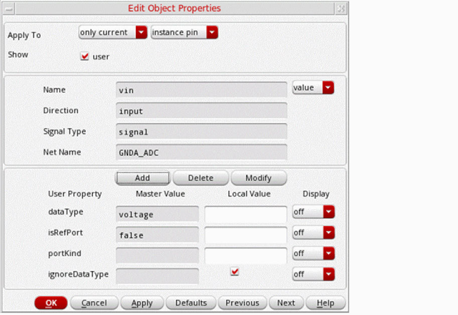
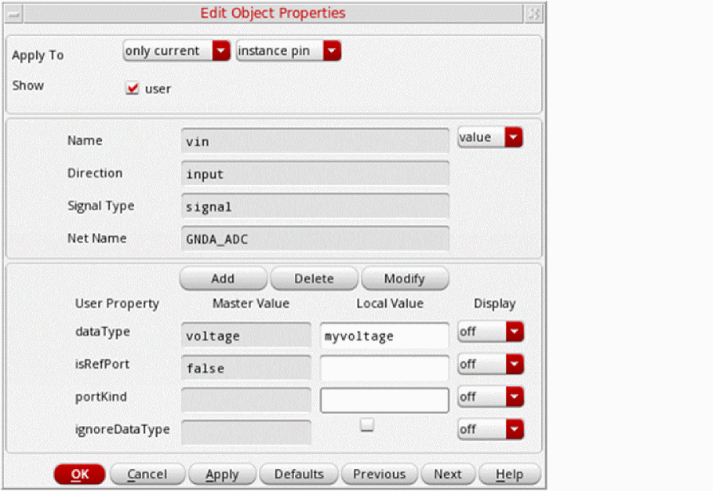
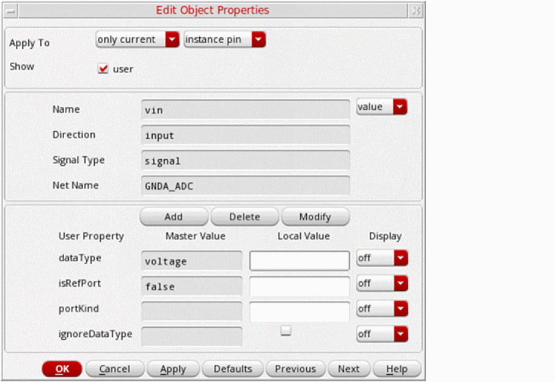

DataType Propagation
The SystemVerilog Netlister allows you to modify the dataType, portKind, and isUnpacked properties, which are specific to an instance.
The datatype can be propagated from the following:
- From text views
- From instance ports on the symbol (place master).
- From instance ports in the schematic
When ignoreDataType is set to t, the dataType, portKind, and isUnpacked properties are ignored. Instead, the dataType information that is propagated from the bottom-level cell to the top-level cell is considered.
You can add the ignoreDataType property on a specific instance terminal in the schematic. If this property is selected, the SystemVerilog Netlister will not print the Master Value and the Local Value.
Additionally, you can modify the local values of the dataType, portKind, and isUnpacked port properties that are associated with a specific instance of a cell.
The following table clearly describes the impact of enabling and disabling the ignoreDataType property on the port of an instance in different scenarios:
Example
Consider the input port I2 in the following schematic and the related condition scenarios that follow.
-
When ignoreDataType is set to t on the port of an instance
When you setignoreDataTypetotonI2, the master and local values ofdataTypeandportKindare ignored. In such a case,dataTypeinformation that is propagated from the bottom-level cell to the top-level cell is used.
The following example shows how the netlist displays the port information in this scenario:module tb_w_voltage ( output wire logic VOUT0, output wire logic VOUT1, output wire logic VOUT2, input wire logic GNDA_ADC, input voltage VIN0, input voltage VIN1 );
Here, thewire logicvalue is derived from thedataTypeproperty of the bottom-level cell. -
When ignoreDataType is set to nil and the local value of dataType is set to custom_value
When you setignoreDataTypetonilonI2and the local valuedataTypetomyvoltage, the local valuemyvoltageof the specific instance is used, instead of the master valuevoltagethat is set on the symbol cell.
The following example shows how the netlist displays the port information in this scenario:module tb_w_voltage ( output wire logic VOUT0, output wire logic VOUT1, output wire logic VOUT2, input myvoltage GNDA_ADC, input voltage VIN0, input voltage VIN1 );
Here, the local value overrides the master value. -
When ignoreDataType is set to nil and the local value of dataType is not set
When you setignoreDataTypetonilonI2and the local values ofdataTypeandportKindare not set, the master valuevoltageof the symbol cell property is used.
The following example shows how the netlist displays the port information in this scenario:module tb_w_voltage ( output wire logic VOUT0, output wire logic VOUT1, output wire logic VOUT2, input voltage GNDA_ADC, input voltage VIN0, input voltage VIN1 );
Here, the property of the symbol cell (master value) is used.
Related Topics
SystemVerilog Netlister Graphical User Interface
Return to top